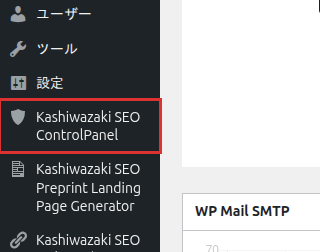

インストール・初期設定
プラグインのインストールから初期設定まで、ステップバイステップで解説します。
インストール方法
プラグインを入手してアップロード
GitHub リポジトリから ZIP をダウンロードし、展開したフォルダを /wp-content/plugins/wp-plugin-kashiwazaki-seo-control-panel/ としてアップロードします。管理画面「プラグイン > 新規追加 > プラグインのアップロード」から ZIP を直接アップロードすることもできます。
プラグインを有効化
WordPress 管理画面「プラグイン」の一覧から「Kashiwazaki SEO ControlPanel」を有効化します。有効化と同時に自動チェックのスケジュール（既定: 日次）が登録されます。
メニューを確認
管理画面の左メニューに「Kashiwazaki SEO ControlPanel」が追加されます。

メニューはシールド（盾）のアイコンで、「設定」メニューの下あたりに表示されます。クリックするとタブ式のコントロールパネル（更新一覧・ニュース・設定・診断の 4 タブ。通知の設定は「設定」タブに含まれます）が開きます。
初期設定
初回チェックを実行
「更新一覧」タブを開き、右上の「今すぐチェック」ボタンを押します。マニフェストを取得し、導入済みのプラグイン/テーマとの照合結果が一覧に表示されます。
メール通知を確認
「通知・設定」タブでメール通知の ON/OFF と通知先メールアドレスを確認します。既定ではサイトの管理者メールアドレスに通知されます。設定内容の詳細は通知ページを参照してください。
自動チェック間隔を選ぶ
「通知・設定」タブの「自動チェック間隔」で 毎時 / 6 時間ごと / 日次 / 週次 から選択します（既定: 日次）。以後は WordPress の予約実行（wp-cron）で自動的にチェックされます。
設定はすべて既定値のままでも動作します。インストール直後に必要な操作は、初回の「今すぐチェック」だけです。